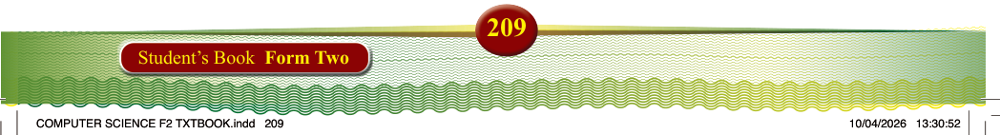
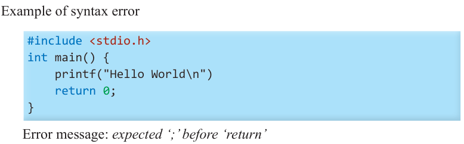
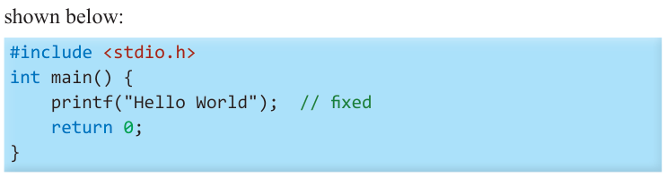
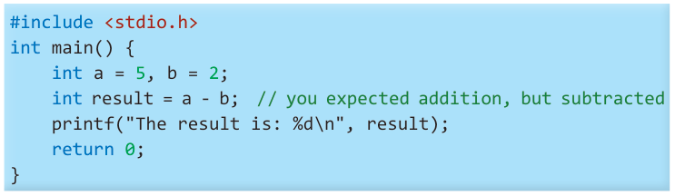

Debugging and error handling
Understanding compilation errors
When you write a C program, the compiler checks your code for errors before it
runs the program. If there is an error, the compiler stops the program from running
and shows you a message about the error. This is called a compilation error.
Common errors in C programming
(i) Syntax errors: These errors occur when you break the rules of the C language, like forgetting a semicolon or misspelling a keyword.
Example of syntax error

#include <stdio.h> int main() { printf("Hello World\n") return 0;
}
Error message: expected ‘;’ before ‘return’
The error message in the example above indicates that there is a missing
semicolon at the end of the printf(“Hello World\n”) statement. To fix the
error, add a semicolon at the end of printf(“Hello World\n”) statement as
shown below:

#include <stdio.h> int main() { printf("Hello World"); // fixed return 0;
}
(ii) Logical errors: These errors happen when your program runs, but the output
isn’t what you expected. Logical errors do not stop the program from compiling,
but cause wrong results.
For example, using incorrect formulas or making wrong decisions in your code.

#include <stdio.h> int main() { int a = 5, b = 2;
int result = a - b; // you expected addition, but subtracted
printf("The result is: %d\n", result); return 0;
}